import numpy as np
import pandas as pd
import matplotlib.pyplot as plt
from matplotlib.patches import Patch
plt.rcParams.update({"figure.figsize": (6, 3.6), "axes.grid": True,
"grid.alpha": 0.25, "figure.dpi": 110,
"axes.spines.top": False, "axes.spines.right": False})
np.set_printoptions(precision=3, suppress=True)
pd.set_option("display.width", 110)
SEMILLA = 852
rng = np.random.default_rng(SEMILLA)Selección de variables con Ridge y Lasso: un caso de política pública

Ejemplo de la clase Regression with Regularization: Ridge and Lasso.
Contenido
- Un problema de política pública y generación de datos.
- Exploración de un conjunto mixto.
- Preprocesamiento con
ColumnTransformer, y por qué va dentro delPipeline. - Mínimos cuadrados y su inestabilidad.
- Ridge, trayectoria de coeficientes y elección de \(\lambda\) por validación cruzada.
- Lasso, selección de variables y regla de un error estándar.
- Comparación de lo seleccionado contra la verdad conocida.
- Variables categóricas.
- Elastic net y los predictores correlacionados.
- Estabilidad de la selección por remuestreo.
- Desempeño fuera de muestra.
- Lectura de los resultados para política pública.
Notación. \(\mathbf{X} \in \mathbb{R}^{N\times p}\) es la matriz de diseño, \(\mathbf{y} \in \mathbb{R}^{N}\) la respuesta, \(\beta\) los coeficientes y \(\lambda\) el parámetro de regularización. En scikit-learn ese parámetro se llama alpha.
1. El problema
Un servicio local de educación dispone de un puntaje promedio de aprendizaje por establecimiento y de un registro administrativo con varias decenas de indicadores de la escuela y de su comuna. La pregunta es la habitual en política pública, qué factores acompañan sistemáticamente al rendimiento y cuáles son ruido, para concentrar el diagnóstico en algunas variables que se puedan monitorear.
El registro tiene tres rasgos que hacen incómodo el ajuste por mínimos cuadrados.
- Hay muchas más variables candidatas que ideas sustantivas, y buena parte son indicadores de gestión sin relación con el aprendizaje.
- Varias variables miden lo mismo por distintas vías. El ingreso mediano del hogar, la tasa de pobreza comunal y el acceso a internet son tres lecturas del mismo nivel socioeconómico.
- Hay variables categóricas con varios niveles, como la macrozona o la dependencia administrativa del establecimiento, que se convierten en varias columnas cada una.
Los datos son simulados. Esto permite evaluar un procedimiento de selección, porque sólo con datos simulados se conoce el conjunto de variables verdaderamente relevantes y se puede contar cuántas recupera cada método. Las escalas y las relaciones se eligieron para que se parezcan a las de un registro educativo real.
2. Los datos
La generación sigue una estructura plausible. Un nivel socioeconómico latente por establecimiento condiciona la composición de su matrícula, el ingreso de las familias, la ruralidad y la dependencia administrativa. El puntaje depende de un subconjunto pequeño de esas variables más un término de error.
N = 1200
# Nivel socioeconómico latente (no observado)
base_macro = {"Norte": -0.05, "Centro": -0.10, "RM": 0.25, "Sur": -0.20, "Austral": -0.05}
macrozona = rng.choice(list(base_macro), size=N, p=[0.12, 0.24, 0.34, 0.22, 0.08])
nse = np.array([base_macro[m] for m in macrozona]) + rng.normal(0, 1, N)
# Variables categóricas
p_rural = 1 / (1 + np.exp(1.9 + 1.2 * nse))
zona = np.where(rng.random(N) < p_rural, "Rural", "Urbano")
util = np.column_stack([np.zeros(N), 0.8 + 0.5 * nse, -2.4 + 1.7 * nse]) # Mun, PS, PP
prob = np.exp(util) / np.exp(util).sum(1, keepdims=True)
niveles_dep = np.array(["Municipal", "Part. subvencionado", "Part. pagado"])
dependencia = niveles_dep[[rng.choice(3, p=fila) for fila in prob]]# Variables numéricas
ingreso_mediano = np.exp(12.9 + 0.42 * nse + rng.normal(0, 0.18, N)) # CLP
escolaridad_madre = np.clip(10.6 + 1.5 * nse + rng.normal(0, 1.1, N), 4, 21) # años
ratio_alumno_doc = np.clip(22 - 2.5 * nse + rng.normal(0, 3.0, N), 6, 45)
asistencia = np.clip(92 - 2.0 * (zona == "Rural") + 1.2 * nse
+ rng.normal(0, 2.5, N), 60, 100) # %
gasto_educ_pc = np.exp(5.9 - 0.25 * nse + rng.normal(0, 0.30, N)) # miles CLP
# Variables numéricas redundantes (miden el mismo NSE)
pobreza_comunal = np.clip(14 - 5.5 * nse + rng.normal(0, 2.2, N), 0.4, 60) # %
acceso_internet = 100 / (1 + np.exp(-(1.1 + 0.85 * nse + rng.normal(0, 0.35, N))))
# Indicadores administrativos sin efecto sobre el aprendizaje
ruido = {
"antiguedad_edificio": np.clip(rng.gamma(4, 6, N), 1, 90),
"superficie_terreno_m2": np.exp(8.0 + 0.5 * rng.normal(0, 1, N)),
"dias_habiles_ano": np.round(rng.normal(188, 4, N)),
"n_funcionarios_admin": np.clip(rng.poisson(7, N), 1, None),
"rotacion_admin": np.clip(rng.beta(2, 8, N) * 100, 0, 100),
"edad_media_docentes": np.clip(rng.normal(44, 6, N), 25, 68),
"n_reuniones_consejo": np.clip(rng.poisson(9, N), 0, None),
"distancia_capital_km": np.exp(3.0 + 0.9 * rng.normal(0, 1, N)),
"presupuesto_mantencion": np.exp(8.6 + 0.45 * rng.normal(0, 1, N)),
"n_tramites_digitales": np.clip(rng.poisson(15, N), 0, None),
"indice_conectividad": np.clip(rng.normal(50, 12, N), 0, 100),
"matricula_total": np.exp(5.4 + 0.35 * (zona == "Urbano") + rng.normal(0, 0.5, N)),
}Variable de interés para la política: Participación en un programa de apoyo socioeducativo.
Su asignación no es aleatoria, el programa se focaliza en las comunas más pobres, que son justamente las de menor puntaje. Esa focalización es lo que más adelante obliga a separar predicción de efecto causal.
p_programa = 1 / (1 + np.exp(-(-0.5 + 0.11 * (pobreza_comunal - 14))))
programa_apoyo = np.where(rng.random(N) < p_programa, "Si", "No")
def z(v):
v = np.asarray(v, dtype=float)
return (v - v.mean()) / v.std()
# Modelo verdadero
efecto_dep = {"Municipal": 0.0, "Part. subvencionado": 6.0, "Part. pagado": 18.0}
efecto_macro = {"Norte": 0.0, "Centro": 1.5, "RM": 3.0, "Sur": -1.0, "Austral": -2.0}
puntaje = (250.0
+ 12.0 * z(escolaridad_madre)
+ 9.0 * z(np.log(ingreso_mediano))
- 6.0 * z(ratio_alumno_doc)
+ 7.5 * z(asistencia)
+ 3.0 * z(np.log(gasto_educ_pc))
+ 2.5 * z(acceso_internet)
+ np.array([efecto_dep[d] for d in dependencia])
+ np.array([efecto_macro[m] for m in macrozona])
- 4.0 * (zona == "Rural")
+ 3.5 * (programa_apoyo == "Si")
+ rng.normal(0, 24, N))datos = pd.DataFrame({
"puntaje": puntaje,
"macrozona": macrozona, "zona": zona, "dependencia": dependencia,
"programa_apoyo": programa_apoyo,
"ingreso_mediano": ingreso_mediano, "escolaridad_madre": escolaridad_madre,
"ratio_alumno_doc": ratio_alumno_doc, "asistencia": asistencia,
"gasto_educ_pc": gasto_educ_pc, "pobreza_comunal": pobreza_comunal,
"acceso_internet": acceso_internet, **ruido,
})
# Las variables monetarias y de tamaño son fuertemente asimétricas. Entran en
# logaritmo, que es la escala en que su relación con el puntaje es aproximadamente
# lineal, y es también la escala en que se generaron.
ASIMETRICAS = ["ingreso_mediano", "gasto_educ_pc", "superficie_terreno_m2",
"presupuesto_mantencion", "distancia_capital_km", "matricula_total"]
datos[ASIMETRICAS] = np.log(datos[ASIMETRICAS])
datos = datos.rename(columns={c: "log_" + c for c in ASIMETRICAS})
# variables con coeficiente verdadero distinto de cero
VERDADERAS = {"escolaridad_madre", "log_ingreso_mediano", "ratio_alumno_doc",
"asistencia", "log_gasto_educ_pc", "acceso_internet",
"dependencia", "macrozona", "zona", "programa_apoyo"}
VARS_CAT = ["macrozona", "zona", "dependencia", "programa_apoyo"]
VARS_NUM = [c for c in datos.columns if c not in VARS_CAT + ["puntaje"]]
print(f"{datos.shape[0]} establecimientos, {len(VARS_NUM)} numéricas, "f"{len(VARS_CAT)} categóricas")
datos.head(4)1200 establecimientos, 19 numéricas, 4 categóricas| puntaje | macrozona | zona | dependencia | programa_apoyo | log_ingreso_mediano | escolaridad_madre | ratio_alumno_doc | asistencia | log_gasto_educ_pc | ... | dias_habiles_ano | n_funcionarios_admin | rotacion_admin | edad_media_docentes | n_reuniones_consejo | log_distancia_capital_km | log_presupuesto_mantencion | n_tramites_digitales | indice_conectividad | log_matricula_total | |
|---|---|---|---|---|---|---|---|---|---|---|---|---|---|---|---|---|---|---|---|---|---|
| 0 | 313.871745 | RM | Urbano | Part. pagado | Si | 13.411845 | 13.029179 | 20.598364 | 93.655203 | 5.403681 | ... | 183.0 | 3 | 9.507244 | 45.560282 | 8 | 2.164955 | 8.703562 | 18 | 45.207065 | 6.156789 |
| 1 | 257.703776 | Austral | Rural | Part. pagado | Si | 12.813695 | 10.590823 | 17.282254 | 91.892508 | 5.489571 | ... | 185.0 | 15 | 16.184686 | 51.682567 | 9 | 3.854188 | 8.260446 | 14 | 56.113878 | 5.043001 |
| 2 | 266.280086 | Austral | Urbano | Part. subvencionado | Si | 12.900225 | 10.861576 | 18.871940 | 87.127273 | 5.680313 | ... | 191.0 | 5 | 1.452469 | 40.730310 | 8 | 2.077318 | 8.585049 | 26 | 58.895219 | 6.174090 |
| 3 | 276.719949 | Sur | Urbano | Part. subvencionado | No | 13.322575 | 12.858258 | 20.039422 | 90.421043 | 5.974324 | ... | 182.0 | 5 | 30.846908 | 41.518990 | 9 | 3.415349 | 8.445762 | 18 | 51.005614 | 6.026948 |
4 rows × 24 columns
print("variables categóricas y sus niveles")
for c in VARS_CAT:
print(f" {c:16s}", dict(datos[c].value_counts()))
print()
datos[["puntaje", "log_ingreso_mediano", "escolaridad_madre", "asistencia",
"pobreza_comunal", "acceso_internet"]].describe().round(2)variables categóricas y sus niveles
macrozona {'RM': np.int64(370), 'Centro': np.int64(288), 'Sur': np.int64(282), 'Norte': np.int64(153), 'Austral': np.int64(107)}
zona {'Urbano': np.int64(970), 'Rural': np.int64(230)}
dependencia {'Part. subvencionado': np.int64(737), 'Municipal': np.int64(383), 'Part. pagado': np.int64(80)}
programa_apoyo {'No': np.int64(704), 'Si': np.int64(496)}
| puntaje | log_ingreso_mediano | escolaridad_madre | asistencia | pobreza_comunal | acceso_internet | |
|---|---|---|---|---|---|---|
| count | 1200.00 | 1200.00 | 1200.00 | 1200.00 | 1200.00 | 1200.00 |
| mean | 257.22 | 12.90 | 10.58 | 91.63 | 14.02 | 71.48 |
| std | 39.38 | 0.46 | 1.89 | 2.97 | 5.89 | 16.53 |
| min | 130.66 | 11.46 | 4.46 | 81.38 | 0.40 | 5.58 |
| 25% | 230.63 | 12.57 | 9.30 | 89.75 | 9.79 | 60.55 |
| 50% | 257.73 | 12.90 | 10.57 | 91.73 | 14.16 | 74.60 |
| 75% | 283.93 | 13.22 | 11.81 | 93.65 | 18.29 | 85.02 |
| max | 393.46 | 14.42 | 16.97 | 100.00 | 32.79 | 98.83 |
Antes de tocar los datos se separa un conjunto de prueba. Todo lo que sigue, incluida la elección de \(\lambda\) y la decisión sobre qué variables conservar, ocurre dentro del conjunto de entrenamiento. El de prueba se abre una sola vez al final.
from sklearn.model_selection import train_test_split
X = datos.drop(columns="puntaje")
y = datos["puntaje"].to_numpy()
X_tr, X_te, y_tr, y_te = train_test_split(X, y, test_size=0.25, random_state=0)
print("entrenamiento:", X_tr.shape, " prueba:", X_te.shape)entrenamiento: (900, 23) prueba: (300, 23)3. Exploración
Dos figuras bastan para ver la estructura del problema. La primera muestra el puntaje según las categóricas, la segunda muestra que varias numéricas son casi la misma variable.
fig, axes = plt.subplots(1, 3, figsize=(9.6, 3.4))
for ax, var in zip(axes, ["dependencia", "zona", "programa_apoyo"]):
niveles = sorted(X_tr[var].unique())
partes = [y_tr[X_tr[var] == g] for g in niveles]
bp = ax.boxplot(partes, tick_labels=[g.replace(". ", ".\n") for g in niveles],
widths=0.55, patch_artist=True, showfliers=False)
for caja in bp["boxes"]:
caja.set(facecolor="#9ecae1", alpha=0.8)
for med in bp["medians"]:
med.set(color="#08306b", lw=1.6)
ax.set_title(var, fontsize=10)
ax.tick_params(axis="x", labelsize=8)
axes[0].set_ylabel("puntaje")
fig.suptitle("Puntaje según las variables categóricas", fontsize=11)
fig.tight_layout(); plt.show()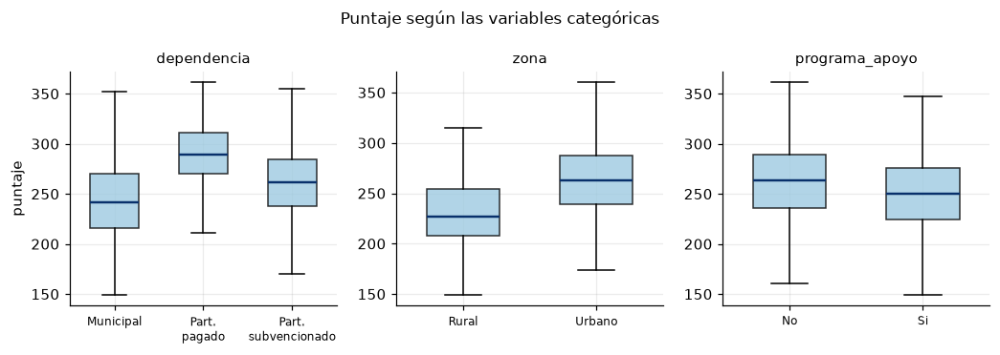
La dependencia separa claramente. La zona algo menos. Y el programa de apoyo aparece asociado a peor puntaje, pese a que en el modelo generador su coeficiente es positivo. Es el efecto de la focalización, el programa llega donde el puntaje ya era bajo. Ninguna regresión lo va a arreglar por sí sola.
corr = X_tr[VARS_NUM].corr().to_numpy()
fig, ax = plt.subplots(figsize=(7.2, 6.2))
im = ax.imshow(corr, cmap="RdBu_r", vmin=-1, vmax=1)
ax.set_xticks(range(len(VARS_NUM)), VARS_NUM, rotation=90, fontsize=7)
ax.set_yticks(range(len(VARS_NUM)), VARS_NUM, fontsize=7)
ax.grid(False)
fig.colorbar(im, ax=ax, shrink=0.75, label="correlación")
ax.set_title("Correlaciones entre las variables numéricas", fontsize=11)
fig.tight_layout(); plt.show()
pares = (X_tr[VARS_NUM].corr()
.where(~np.eye(len(VARS_NUM), dtype=bool)).stack()
.abs().sort_values(ascending=False))
print("pares más correlacionados\n", pares.head(6).round(3))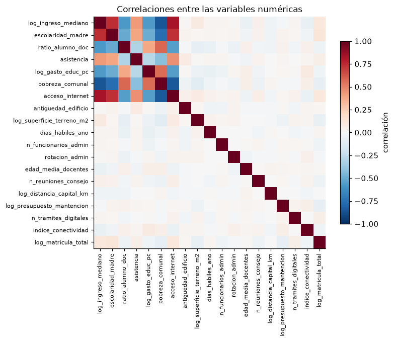
pares más correlacionados
log_ingreso_mediano pobreza_comunal 0.857
pobreza_comunal log_ingreso_mediano 0.857
acceso_internet pobreza_comunal 0.841
pobreza_comunal acceso_internet 0.841
acceso_internet log_ingreso_mediano 0.821
log_ingreso_mediano acceso_internet 0.821
dtype: float64El bloque socioeconómico salta a la vista. Ingreso, pobreza y acceso a internet forman un grupo con correlaciones por sobre 0.7 en valor absoluto. Ese es exactamente el escenario donde mínimos cuadrados reparte coeficientes grandes y de signo arbitrario entre variables que dicen lo mismo, y donde ridge y lasso se comportan de forma distinta.
4. Preprocesamiento
Hay que resolver dos cosas antes de penalizar.
Las categóricas se codifican. Cada variable con \(K\) niveles se convierte en \(K-1\) columnas indicadoras, dejando un nivel como referencia que queda absorbido por el intercepto.
Todas las columnas se llevan a escala común. Ridge y lasso suman coeficientes a través de predictores, de modo que una variable medida en pesos y otra en años producen penalizaciones incomparables. Se estandariza también las columnas indicadoras, para que la penalización no dependa de la frecuencia del nivel. Es una convención discutible, y en la sección 8 se ve qué se paga por ella.
El punto operativo es que el preprocesamiento va dentro del Pipeline. Si se estandariza el conjunto completo antes de la validación cruzada, cada pliegue de validación contribuye con su media y su varianza al ajuste, y la estimación del error sale optimista.
from sklearn.compose import ColumnTransformer
from sklearn.pipeline import Pipeline
from sklearn.preprocessing import OneHotEncoder, StandardScaler
def hacer_preproc(cat=VARS_CAT, num=VARS_NUM, categorias="auto"):
return ColumnTransformer([
("num", "passthrough", num),
("cat", OneHotEncoder(drop="first", sparse_output=False,
categories=categorias), cat),
])
def hacer_pipeline(modelo, categorias="auto"):
return Pipeline([("prep", hacer_preproc(categorias=categorias)),
("esc", StandardScaler()),
("modelo", modelo)])
prep = hacer_preproc().fit(X_tr)
nombres = [n.split("__", 1)[1] for n in prep.get_feature_names_out()]
print(f"{len(VARS_NUM)} numéricas + {len(VARS_CAT)} categóricas -> "
f"{len(nombres)} columnas de diseño")
print(nombres[-8:])19 numéricas + 4 categóricas -> 27 columnas de diseño
['macrozona_Centro', 'macrozona_Norte', 'macrozona_RM', 'macrozona_Sur', 'zona_Urbano', 'dependencia_Part. pagado', 'dependencia_Part. subvencionado', 'programa_apoyo_Si']Para dibujar las trayectorias de coeficientes conviene tener la matriz de diseño ya transformada y la respuesta centrada, igual que en el cuaderno 02. Esta transformación única se usa solo para las figuras, la elección de \(\lambda\) sigue haciéndose con el Pipeline completo dentro de la validación cruzada.
esc = StandardScaler().fit(prep.transform(X_tr))
Xd_tr = esc.transform(prep.transform(X_tr))
Xd_te = esc.transform(prep.transform(X_te))
yc_tr = y_tr - y_tr.mean()
# de cada columna de diseño a la variable original que la originó
def variable_origen(col):
for v in VARS_CAT:
if col.startswith(v + "_"):
return v
return col
ORIGEN = np.array([variable_origen(c) for c in nombres])
print("Xd_tr:", Xd_tr.shape)Xd_tr: (900, 27)5. Mínimos cuadrados como punto de partida
\[\widehat{\beta}^{\,\mathrm{ls}} = (\mathbf{X}^{\top}\mathbf{X})^{-1}\mathbf{X}^{\top}\mathbf{y}\]
Con 900 observaciones y 27 columnas de diseño la solución existe y no hay ningún problema numérico aparente. El problema es otro, los coeficientes del bloque socioeconómico son inestables. Se ve remuestreando el conjunto de entrenamiento y observando cuánto se mueve cada coeficiente.
from sklearn.linear_model import LinearRegression
d = np.linalg.svd(Xd_tr, compute_uv=False)
print(f"número de condición de X : {d[0] / d[-1]:7.1f}")
print(f"número de condición de X'X : {(d[0] / d[-1]) ** 2:7.1f}")
ols = LinearRegression().fit(Xd_tr, yc_tr)
B = np.empty((400, Xd_tr.shape[1]))
idx = np.arange(len(yc_tr))
for b in range(400):
s = rng.choice(idx, size=len(idx), replace=True)
B[b] = LinearRegression().fit(Xd_tr[s], yc_tr[s]).coef_
resumen = pd.DataFrame({"beta_ls": ols.coef_,
"sd_bootstrap": B.std(0)}, index=nombres)
resumen["|t| aprox"] = (resumen.beta_ls / resumen.sd_bootstrap).abs()
print()
print(resumen.loc[["log_ingreso_mediano", "pobreza_comunal", "acceso_internet",
"escolaridad_madre", "asistencia"]].round(2))número de condición de X : 6.7
número de condición de X'X : 45.5
beta_ls sd_bootstrap |t| aprox
log_ingreso_mediano 6.31 1.74 3.64
pobreza_comunal 0.32 1.77 0.18
acceso_internet 3.57 1.92 1.86
escolaridad_madre 12.49 1.45 8.61
asistencia 8.57 0.99 8.69orden = np.argsort(np.abs(ols.coef_))[::-1][:16]
colores = ["#2166ac" if ORIGEN[j] in VERDADERAS else "#b2182b" for j in orden]
fig, ax = plt.subplots(figsize=(7.4, 4.6))
ax.barh(range(len(orden)), ols.coef_[orden], xerr=1.96 * B.std(0)[orden],
color=colores, alpha=0.85, error_kw=dict(lw=1, ecolor="0.35"))
ax.set_yticks(range(len(orden)), [nombres[j] for j in orden], fontsize=8)
ax.invert_yaxis()
ax.axvline(0, color="gray", lw=0.9)
ax.set_xlabel("coeficiente de mínimos cuadrados (escala estandarizada)")
ax.set_title("Los 16 coeficientes más grandes, con intervalo bootstrap al 95%",
fontsize=11)
ax.legend(handles=[Patch(color="#2166ac", label="efecto verdadero ≠ 0"),
Patch(color="#b2182b", label="efecto verdadero = 0")],
fontsize=8, loc="lower right")
fig.tight_layout(); plt.show()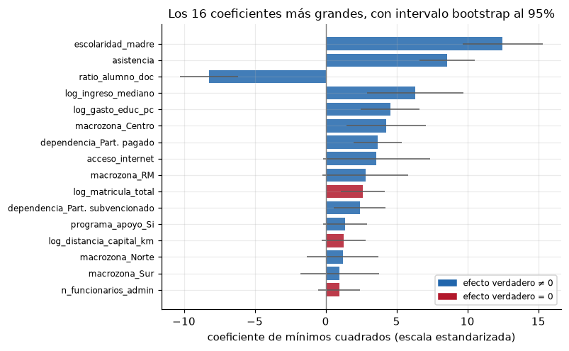
Mínimos cuadrados no deja ningún coeficiente en cero, así que no selecciona nada. Deja 27 coeficientes distintos de cero, entre ellos los de todos los indicadores administrativos, y reparte el efecto socioeconómico entre tres variables correlacionadas con intervalos tan anchos que dos de ellos cruzan el cero. Un informe construido sobre esta tabla mencionaría variables que no tienen efecto alguno.
6. Ridge
\[\widehat{\beta}^{\,\mathrm{ridge}} = \arg\min_{\beta}\; \lVert \mathbf{y}-\mathbf{X}\beta \rVert^2 + \lambda \lVert \beta \rVert_2^2\]
La penalización cuadrática encoge todos los coeficientes hacia cero de manera continua, sin anular ninguno. Con predictores correlacionados los reparte entre ellos, que es lo sensato cuando se busca predecir, y lo inservible cuando se busca una lista corta de variables.
lams = np.logspace(-1, 5, 120)
p_d = Xd_tr.shape[1]
B_ridge = np.array([np.linalg.solve(Xd_tr.T @ Xd_tr + l * np.eye(p_d), Xd_tr.T @ yc_tr)
for l in lams])
# grados de libertad efectivos: df(lambda) = sum_j d_j^2 / (d_j^2 + lambda)
df_ridge = np.array([(d ** 2 / (d ** 2 + l)).sum() for l in lams])fig, axes = plt.subplots(1, 2, figsize=(9.6, 3.8))
destacadas = ["log_ingreso_mediano", "pobreza_comunal", "acceso_internet",
"escolaridad_madre", "asistencia", "ratio_alumno_doc"]
for j, nom in enumerate(nombres):
if nom in destacadas:
axes[0].semilogx(lams, B_ridge[:, j], lw=2, label=nom)
else:
axes[0].semilogx(lams, B_ridge[:, j], lw=0.8, color="0.75")
axes[0].axhline(0, color="gray", lw=0.8)
axes[0].set_xlabel(r"$\lambda$"); axes[0].set_ylabel(r"$\widehat{\beta}_j$")
axes[0].set_title("Trayectoria de ridge", fontsize=11)
axes[0].legend(fontsize=7, ncol=1)
axes[1].semilogx(lams, df_ridge, color="#08519c", lw=2)
axes[1].axhline(p_d, color="gray", ls=":", lw=1)
axes[1].text(lams[0] * 1.3, p_d - 1.6, f"p = {p_d}", fontsize=8, color="0.4")
axes[1].set_xlabel(r"$\lambda$"); axes[1].set_ylabel(r"df($\lambda$)")
axes[1].set_title("Grados de libertad efectivos", fontsize=11)
fig.tight_layout(); plt.show()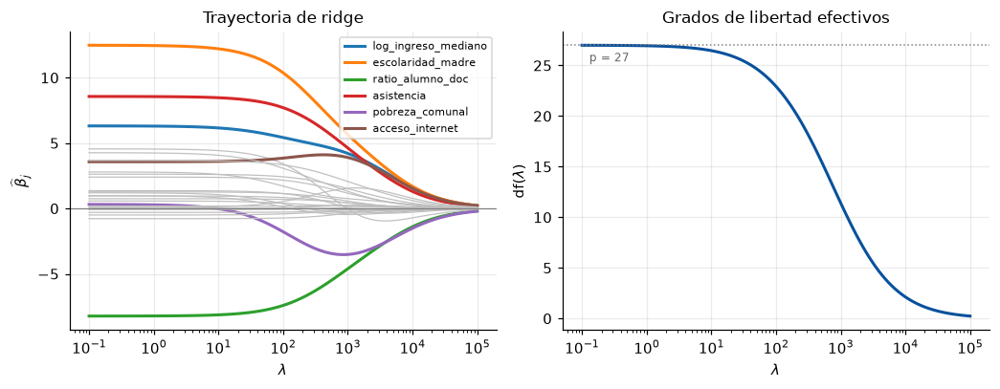
Ninguna curva toca el cero. Los grados de libertad efectivos \(\mathrm{df}(\lambda)=\sum_j d_j^2/(d_j^2+\lambda)\) bajan de forma continua desde \(p\) hasta cero, y son la manera correcta de decir cuánta complejidad queda tras penalizar.
Elección de \(\lambda\)
La rejilla se recorre con validación cruzada de cinco pliegues sobre el Pipeline completo, de modo que la estandarización se reajusta en cada pliegue.
from sklearn.linear_model import Ridge
from sklearn.model_selection import GridSearchCV, KFold
kf = KFold(n_splits=5, shuffle=True, random_state=1)
rejilla_ridge = np.logspace(-1, 5, 60)
bus_ridge = GridSearchCV(hacer_pipeline(Ridge()),
{"modelo__alpha": rejilla_ridge},
scoring="neg_mean_squared_error", cv=kf, n_jobs=-1)
bus_ridge.fit(X_tr, y_tr)
mse_r = -bus_ridge.cv_results_["mean_test_score"]
se_r = bus_ridge.cv_results_["std_test_score"] / np.sqrt(kf.get_n_splits())
lam_r_min = bus_ridge.best_params_["modelo__alpha"]
print(f"lambda óptimo (ridge): {lam_r_min:.2f} ECM de CV: {mse_r.min():.1f}")lambda óptimo (ridge): 27.59 ECM de CV: 622.97. Lasso
\[\widehat{\beta}^{\,\mathrm{lasso}} = \arg\min_{\beta}\; \tfrac{1}{2N}\lVert \mathbf{y}-\mathbf{X}\beta \rVert^2 + \lambda \lVert \beta \rVert_1\]
La penalización en valor absoluto no es diferenciable en el origen, y esa esquina es lo que produce soluciones exactamente nulas. El lasso ajusta y selecciona en un solo paso.
Nótese el factor \(1/(2N)\), que es la convención de scikit-learn y no la de ESL. Los valores de alpha de Lasso no son comparables numéricamente con los de Ridge, ni con los \(\lambda\) de glmnet salvo por esa constante.
from sklearn.linear_model import Lasso, lasso_path
alphas_l, coefs_l, _ = lasso_path(Xd_tr, yc_tr, eps=1e-4, alphas=120)
n_activos = (np.abs(coefs_l) > 1e-8).sum(0)
# columnas de diseño cuyo coeficiente verdadero es distinto de cero
n_cols_verdaderas = int(np.isin(ORIGEN, list(VERDADERAS)).sum())
print(f"{n_cols_verdaderas} de las {len(nombres)} columnas provienen de una variable "
"con efecto verdadero")14 de las 27 columnas provienen de una variable con efecto verdaderofig, axes = plt.subplots(1, 2, figsize=(9.6, 3.8), sharex=True)
for j, nom in enumerate(nombres):
estilo = dict(lw=2) if nom in destacadas else dict(lw=0.8, color="0.75")
axes[0].semilogx(alphas_l, coefs_l[j], label=nom if nom in destacadas else None,
**estilo)
axes[0].axhline(0, color="gray", lw=0.8)
axes[0].set_xlabel(r"$\alpha$"); axes[0].set_ylabel(r"$\widehat{\beta}_j$")
axes[0].set_title("Trayectoria del lasso", fontsize=11)
axes[0].legend(fontsize=7)
axes[1].semilogx(alphas_l, n_activos, color="#08519c", lw=2)
axes[1].axhline(n_cols_verdaderas, color="#b2182b", ls="--", lw=1.2,
label=f"{n_cols_verdaderas} columnas con efecto ≠ 0")
axes[1].set_xlabel(r"$\alpha$"); axes[1].set_ylabel("columnas con coeficiente ≠ 0")
axes[1].set_title("Cardinalidad de la solución", fontsize=11)
axes[1].legend(fontsize=8)
fig.tight_layout(); plt.show()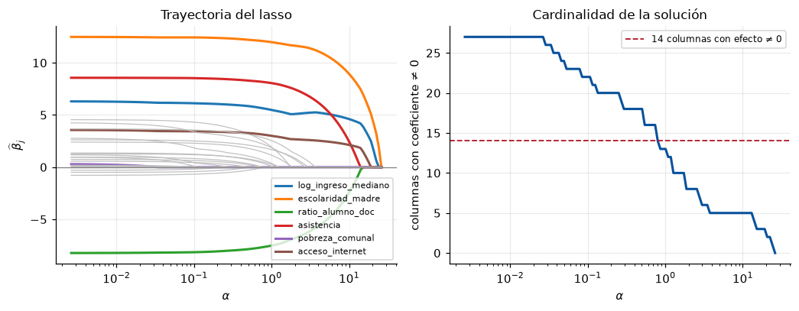
Ahora sí hay curvas que llegan a cero y se quedan ahí. Leyendo de derecha a izquierda, cada variable tiene un \(\alpha\) de entrada, y el orden de entrada es una ordenación implícita por importancia.
Validación cruzada y regla de un error estándar
La curva de error de validación cruzada tiene un mínimo poco marcado, y esa planicie es información. Cualquier \(\alpha\) dentro de un error estándar del mínimo es indistinguible en términos de error de predicción, así que se elige el mayor de ellos, que da el modelo más pequeño. Es la regla de un error estándar, y en selección de variables importa más que en predicción pura.
rejilla_lasso = np.logspace(-3, 1.2, 80)
bus_lasso = GridSearchCV(hacer_pipeline(Lasso(max_iter=50_000)),
{"modelo__alpha": rejilla_lasso},
scoring="neg_mean_squared_error", cv=kf, n_jobs=-1)
bus_lasso.fit(X_tr, y_tr)
mse_l = -bus_lasso.cv_results_["mean_test_score"]
se_l = bus_lasso.cv_results_["std_test_score"] / np.sqrt(kf.get_n_splits())
def regla_1se(rejilla, mse, se):
# mayor alpha cuyo ECM de CV no supera el mínimo más un error estándar
k = int(np.argmin(mse))
umbral = mse[k] + se[k]
return float(rejilla[mse <= umbral].max()), float(rejilla[k])
lam_l_1se, lam_l_min = regla_1se(rejilla_lasso, mse_l, se_l)
lam_r_1se, _ = regla_1se(rejilla_ridge, mse_r, se_r)
print(f"lasso alpha_min = {lam_l_min:.4f} alpha_1se = {lam_l_1se:.4f}")
print(f"ridge alpha_min = {lam_r_min:.2f} alpha_1se = {lam_r_1se:.2f}")lasso alpha_min = 0.4028 alpha_1se = 1.0725
ridge alpha_min = 27.59 alpha_1se = 179.57fig, axes = plt.subplots(1, 2, figsize=(9.6, 3.8))
for ax, rej, mse, se, lmin, l1se, tit in [
(axes[0], rejilla_ridge, mse_r, se_r, lam_r_min, lam_r_1se, "Ridge"),
(axes[1], rejilla_lasso, mse_l, se_l, lam_l_min, lam_l_1se, "Lasso")]:
ax.fill_between(rej, mse - se, mse + se, color="#9ecae1", alpha=0.45)
ax.semilogx(rej, mse, color="#08519c", lw=1.8)
ax.axvline(lmin, color="#238b45", ls="--", lw=1.2, label=r"$\alpha$ mínimo")
ax.axvline(l1se, color="#b2182b", ls="-.", lw=1.2, label=r"$\alpha$ de 1 EE")
k = int(np.argmin(mse))
ax.axhline(mse[k] + se[k], color="0.5", ls=":", lw=1)
ax.set_ylim(mse.min() - 1.5 * se[k], mse.min() + 9 * se[k]) # zoom al mínimo
ax.set_xlabel(r"$\alpha$"); ax.set_title(f"{tit}: error de CV (5 pliegues)",
fontsize=11)
ax.legend(fontsize=8)
axes[0].set_ylabel("ECM de validación cruzada")
fig.tight_layout(); plt.show()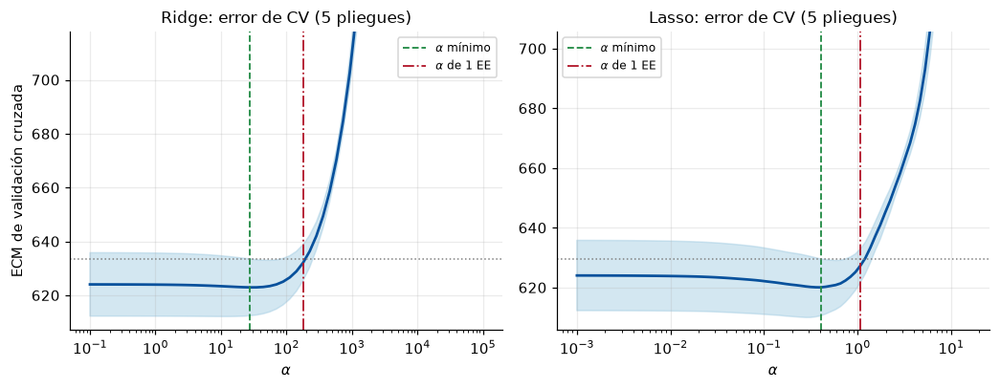
lasso_min = hacer_pipeline(Lasso(alpha=lam_l_min, max_iter=50_000)).fit(X_tr, y_tr)
lasso_1se = hacer_pipeline(Lasso(alpha=lam_l_1se, max_iter=50_000)).fit(X_tr, y_tr)
ridge_min = hacer_pipeline(Ridge(alpha=lam_r_min)).fit(X_tr, y_tr)
def activas(pipe, tol=1e-8):
c = pipe.named_steps["modelo"].coef_
return {ORIGEN[j] for j in np.flatnonzero(np.abs(c) > tol)}
print(f"lasso (alpha mínimo): {(np.abs(lasso_min.named_steps['modelo'].coef_) > 1e-8).sum():2d}"
f" columnas activas, {len(activas(lasso_min))} variables originales")
print(f"lasso (regla 1 EE) : {(np.abs(lasso_1se.named_steps['modelo'].coef_) > 1e-8).sum():2d}"
f" columnas activas, {len(activas(lasso_1se))} variables originales")
print(f"ridge : {(np.abs(ridge_min.named_steps['modelo'].coef_) > 1e-8).sum():2d}"
f" columnas activas (ridge nunca anula)")lasso (alpha mínimo): 18 columnas activas, 16 variables originales
lasso (regla 1 EE) : 12 columnas activas, 10 variables originales
ridge : 27 columnas activas (ridge nunca anula)8. Qué se seleccionó, comparado con la verdad
Con datos simulados se puede hacer lo que en un problema real es imposible, contar aciertos. Una variable original cuenta como seleccionada si alguna de sus columnas de diseño tiene coeficiente distinto de cero.
todas = set(VARS_NUM) | set(VARS_CAT)
def tabla_seleccion(sel, nombre):
vp = len(sel & VERDADERAS)
fp = len(sel - VERDADERAS)
fn = len(VERDADERAS - sel)
vn = len(todas - VERDADERAS - sel)
return {"modelo": nombre, "seleccionadas": len(sel),
"aciertos (VP)": vp, "falsos positivos": fp,
"omitidas (FN)": fn, "descartes correctos": vn}
filas = [tabla_seleccion(todas, "mínimos cuadrados"),
tabla_seleccion(todas, "ridge"),
tabla_seleccion(activas(lasso_min), "lasso (alpha mínimo)"),
tabla_seleccion(activas(lasso_1se), "lasso (regla 1 EE)")]
pd.DataFrame(filas).set_index("modelo")| seleccionadas | aciertos (VP) | falsos positivos | omitidas (FN) | descartes correctos | |
|---|---|---|---|---|---|
| modelo | |||||
| mínimos cuadrados | 23 | 10 | 13 | 0 | 0 |
| ridge | 23 | 10 | 13 | 0 | 0 |
| lasso (alpha mínimo) | 16 | 9 | 7 | 1 | 6 |
| lasso (regla 1 EE) | 10 | 8 | 2 | 2 | 11 |
sel_1se = activas(lasso_1se)
print("verdaderas recuperadas :", sorted(sel_1se & VERDADERAS))
print("falsos positivos :", sorted(sel_1se - VERDADERAS))
print("verdaderas omitidas :", sorted(VERDADERAS - sel_1se))verdaderas recuperadas : ['acceso_internet', 'asistencia', 'dependencia', 'escolaridad_madre', 'log_gasto_educ_pc', 'log_ingreso_mediano', 'macrozona', 'ratio_alumno_doc']
falsos positivos : [np.str_('log_distancia_capital_km'), np.str_('log_matricula_total')]
verdaderas omitidas : ['programa_apoyo', 'zona']c_ols = ols.coef_
c_rid = ridge_min.named_steps["modelo"].coef_
c_las = lasso_1se.named_steps["modelo"].coef_
orden = np.argsort(np.abs(c_ols))[::-1][:18]
pos = np.arange(len(orden))
alto = 0.27
fig, ax = plt.subplots(figsize=(8.2, 5.4))
ax.barh(pos - alto, c_ols[orden], alto, label="mínimos cuadrados", color="0.72")
ax.barh(pos, c_rid[orden], alto, label=f"ridge (α={lam_r_min:.0f})",
color="#4292c6")
ax.barh(pos + alto, c_las[orden], alto, label=f"lasso 1 EE (α={lam_l_1se:.3f})",
color="#b2182b")
ax.set_yticks(pos, [nombres[j] for j in orden], fontsize=8)
for j, tick in zip(orden, ax.get_yticklabels()):
tick.set_color("#08306b" if ORIGEN[j] in VERDADERAS else "#b2182b")
ax.invert_yaxis(); ax.axvline(0, color="gray", lw=0.9)
ax.set_xlabel("coeficiente (escala estandarizada)")
ax.set_title("Tres ajustes sobre las mismas columnas\n"
"etiqueta azul = efecto verdadero ≠ 0, roja = ruido", fontsize=11)
ax.legend(fontsize=8, loc="lower right")
fig.tight_layout(); plt.show()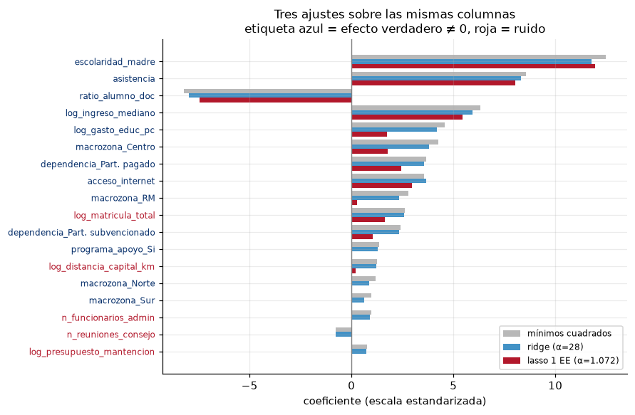
Las barras grises nunca son cero. Las azules de ridge son grises encogidas, todas presentes pero más pequeñas. Las rojas del lasso desaparecen en casi todo el bloque administrativo y sobreviven concentradas en las etiquetas azules.
La tabla anterior muestra el precio de cada regla. Con el \(\alpha\) del mínimo el lasso retiene dieciséis variables y recupera casi todas las verdaderas, a cambio de arrastrar media docena de indicadores administrativos. Con la regla de un error estándar quedan diez, de las cuales ocho son verdaderas, y el costo son dos omisiones, zona y programa_apoyo, cuyos efectos verdaderos son los más pequeños del modelo generador. La regla de un error estándar no es gratis, compra parsimonia con sensibilidad, y qué se prefiere depende de si el objetivo es no dejar fuera nada relevante o no incluir nada superfluo.
Los dos falsos positivos merecen lecturas distintas. log_matricula_total no es ruido puro, es un sustituto de zona, porque los establecimientos urbanos son más grandes, así que el lasso descartó la variable y se quedó con su sombra. log_distancia_capital_km, en cambio, es un falso positivo genuino, y en la sección 11 se verá que el remuestreo lo delata.
Vale la pena mirar pobreza_comunal, cuyo coeficiente verdadero es cero. No es una variable irrelevante en el sentido sustantivo, la pobreza importa muchísimo, sino que su información ya está contenida en el ingreso mediano y en la escolaridad de la madre. El lasso la descarta porque es redundante, no porque sea irrelevante, y esa distinción es la que hay que explicitar en cualquier informe.
9. El problema específico de las variables categóricas
El lasso penaliza columna a columna, no variable a variable. Una categórica con cinco niveles entra como cuatro columnas independientes, y nada impide que el método conserve dos y elimine las otras dos. El resultado es un modelo donde la macrozona existe a medias, lo cual es difícil de comunicar y depende de una decisión arbitraria previa, la elección del nivel de referencia.
El experimento siguiente ajusta el mismo lasso, con el mismo \(\alpha\), cambiando solo cuál macrozona actúa como referencia.
niveles_macro = ["Norte", "Centro", "RM", "Sur", "Austral"]
otras_cat = {v: np.array(sorted(X_tr[v].unique())) for v in VARS_CAT if v != "macrozona"}
resultados_ref = {}
for ref in niveles_macro:
orden_niveles = [ref] + [m for m in niveles_macro if m != ref]
cats = [np.array(orden_niveles) if v == "macrozona" else otras_cat[v]
for v in VARS_CAT]
pipe = hacer_pipeline(Lasso(alpha=lam_l_1se, max_iter=50_000), categorias=cats)
pipe.fit(X_tr, y_tr)
nom_ref = [n.split("__", 1)[1] for n in pipe.named_steps["prep"].get_feature_names_out()]
coef = pipe.named_steps["modelo"].coef_
resultados_ref[ref] = {n: c for n, c in zip(nom_ref, coef)
if n.startswith("macrozona_")}
M = np.zeros((len(niveles_macro), len(niveles_macro)))
for i, ref in enumerate(niveles_macro):
for j, niv in enumerate(niveles_macro):
M[i, j] = resultados_ref[ref].get(f"macrozona_{niv}", np.nan)fig, ax = plt.subplots(figsize=(6.6, 3.8))
im = ax.imshow(np.where(np.isnan(M), 0, M), cmap="RdBu_r",
vmin=-np.nanmax(np.abs(M)), vmax=np.nanmax(np.abs(M)))
for i in range(len(niveles_macro)):
for j in range(len(niveles_macro)):
if np.isnan(M[i, j]):
txt, col = "ref", "0.35"
elif abs(M[i, j]) < 1e-8:
txt, col = "0", "0.35"
else:
txt, col = f"{M[i, j]:.2f}", "black"
ax.text(j, i, txt, ha="center", va="center", fontsize=8, color=col)
ax.set_xticks(range(5), niveles_macro, fontsize=8)
ax.set_yticks(range(5), niveles_macro, fontsize=8)
ax.set_xlabel("columna indicadora"); ax.set_ylabel("nivel usado como referencia")
ax.grid(False)
ax.set_title("El mismo lasso, cambiando solo el nivel de referencia", fontsize=11)
fig.tight_layout(); plt.show()
print("columnas de macrozona retenidas según la referencia")
for ref, dic in resultados_ref.items():
vivas = [k.replace("macrozona_", "") for k, v in dic.items() if abs(v) > 1e-8]
print(f" referencia {ref:8s} -> {vivas if vivas else 'ninguna'}")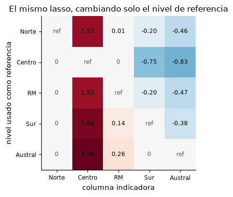
columnas de macrozona retenidas según la referencia
referencia Norte -> ['Centro', 'RM', 'Sur', 'Austral']
referencia Centro -> ['Sur', 'Austral']
referencia RM -> ['Centro', 'Sur', 'Austral']
referencia Sur -> ['Centro', 'RM', 'Austral']
referencia Austral -> ['Centro', 'RM']Cada fila retiene un subconjunto distinto. La decisión de codificación, que es puramente administrativa, termina decidiendo qué macrozonas aparecen en el informe.
Hay tres salidas razonables.
- Group lasso, que penaliza el bloque completo de columnas de una categórica con una norma \(\ell_2\), de modo que la variable entra o sale entera. No está en
scikit-learn, pero sí engroup-lassoy enceler. - Decidir a nivel de variable, declarando seleccionada la categórica si sobrevive cualquiera de sus columnas. Es lo que se hizo en la sección 8, y basta cuando la pregunta es qué variables monitorear.
- Reagrupar los niveles antes de ajustar, cuando la teoría lo permite, por ejemplo colapsando macrozonas en zona centro contra resto.
Para la dependencia administrativa, que tiene un orden natural, el segundo camino funciona sin conflicto.
coef_1se = pd.Series(lasso_1se.named_steps["modelo"].coef_, index=nombres)
print("columnas de variables categóricas en el lasso de 1 EE\n")
print(coef_1se[[n for n in nombres if variable_origen(n) in VARS_CAT]].round(3))columnas de variables categóricas en el lasso de 1 EE
macrozona_Centro 1.762
macrozona_Norte -0.000
macrozona_RM 0.258
macrozona_Sur -0.000
zona_Urbano 0.000
dependencia_Part. pagado 2.456
dependencia_Part. subvencionado 1.056
programa_apoyo_Si 0.000
dtype: float6410. Elastic net y los predictores correlacionados
El lasso, ante un grupo de variables muy correlacionadas, tiende a quedarse con una y anular las demás, y cuál queda depende de fluctuaciones del muestreo. La red elástica combina las dos penalizaciones,
\[\lambda\left[\tfrac{1-\rho}{2}\lVert\beta\rVert_2^2 + \rho\lVert\beta\rVert_1\right],\]
donde \(\rho\) es l1_ratio. La parte \(\ell_2\) produce el efecto de agrupamiento, las variables correlacionadas entran o salen juntas y con coeficientes parecidos. Es la opción razonable cuando interesa el grupo como bloque, por ejemplo cuando el bloque socioeconómico completo es la unidad de interés de la política.
from sklearn.linear_model import ElasticNetCV
enet_cv = ElasticNetCV(l1_ratio=[0.1, 0.3, 0.5, 0.7, 0.9, 0.95, 0.99, 1.0],
alphas=60, cv=kf, max_iter=50_000, n_jobs=-1,
random_state=0)
enet = hacer_pipeline(enet_cv).fit(X_tr, y_tr)
m = enet.named_steps["modelo"]
print(f"l1_ratio elegido: {m.l1_ratio_:.2f} alpha elegido: {m.alpha_:.4f}")
print(f"columnas activas: {(np.abs(m.coef_) > 1e-8).sum()} de {len(nombres)}")l1_ratio elegido: 1.00 alpha elegido: 0.3856
columnas activas: 18 de 27grupo = ["log_ingreso_mediano", "pobreza_comunal", "acceso_internet",
"escolaridad_madre"]
idx_g = [nombres.index(v) for v in grupo]
# la CV puede elegir l1_ratio = 1, es decir lasso puro. Para ver el efecto de
# agrupamiento se fija l1_ratio = 0.3 y se deja que la CV elija solo alpha.
enet_03 = hacer_pipeline(ElasticNetCV(l1_ratio=0.3, alphas=60, cv=kf,
max_iter=50_000, n_jobs=-1,
random_state=0)).fit(X_tr, y_tr)
c_e03 = enet_03.named_steps["modelo"].coef_
print(f"con l1_ratio = 0.3 la CV elige alpha = "
f"{enet_03.named_steps['modelo'].alpha_:.4f}, "
f"{(np.abs(c_e03) > 1e-8).sum()} columnas activas")
comparacion = pd.DataFrame({
"mínimos cuadrados": c_ols[idx_g],
"ridge": c_rid[idx_g],
"lasso (1 EE)": c_las[idx_g],
f"elastic net CV (ρ={m.l1_ratio_:.2f})": m.coef_[idx_g],
"elastic net ρ=0.3 fijo": c_e03[idx_g],
}, index=grupo)
fig, ax = plt.subplots(figsize=(8.4, 4.0))
comparacion.plot.bar(ax=ax, color=["0.72", "#4292c6", "#b2182b", "#238b45",
"#6a51a3"], width=0.82, legend=True)
ax.axhline(0, color="gray", lw=0.9)
ax.set_ylabel("coeficiente"); ax.tick_params(axis="x", rotation=12, labelsize=9)
ax.set_title("El bloque socioeconómico bajo cuatro penalizaciones", fontsize=11)
ax.legend(fontsize=8)
fig.tight_layout(); plt.show()
comparacion.round(3)con l1_ratio = 0.3 la CV elige alpha = 0.0870, 25 columnas activas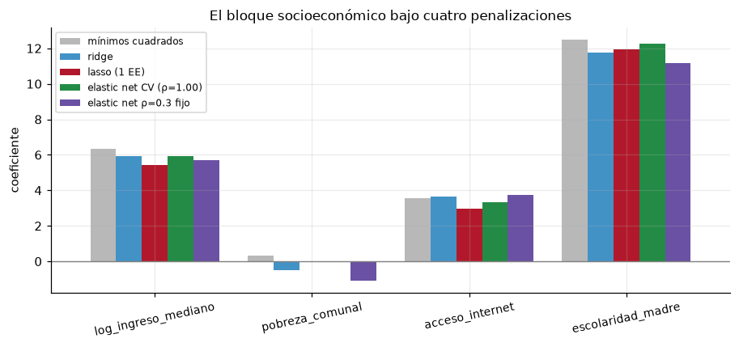
| mínimos cuadrados | ridge | lasso (1 EE) | elastic net CV (ρ=1.00) | elastic net ρ=0.3 fijo | |
|---|---|---|---|---|---|
| log_ingreso_mediano | 6.315 | 5.938 | 5.435 | 5.928 | 5.685 |
| pobreza_comunal | 0.315 | -0.519 | -0.000 | -0.000 | -1.084 |
| acceso_internet | 3.572 | 3.658 | 2.966 | 3.312 | 3.736 |
| escolaridad_madre | 12.486 | 11.770 | 11.943 | 12.278 | 11.176 |
Conviene notar qué eligió la validación cruzada. Con la rejilla de l1_ratio libre terminó en el extremo del lasso puro, porque para predecir no hace falta repartir el efecto entre variables redundantes, basta con quedarse con una. El agrupamiento es una propiedad que se pide por razones de interpretación, no porque mejore el error, y por eso la segunda red elástica lleva el l1_ratio fijado por decisión del analista.
Con esa restricción se ve el contraste completo. Mínimos cuadrados reparte con signos que no resisten el remuestreo, ridge reparte de forma suave, el lasso concentra en dos variables y anula pobreza_comunal, y la red elástica con parte \(\ell_2\) apreciable vuelve a admitir a las cuatro, devolviéndole a la pobreza un coeficiente no nulo. Si el informe habla de un bloque socioeconómico, la última es la representación honesta. Si el informe necesita un indicador único para monitorear, la tercera.
11. Estabilidad de la selección
Un solo ajuste del lasso entrega una lista de variables, pero no dice cuán reproducible es esa lista. La forma barata de averiguarlo es remuestrear el conjunto de entrenamiento, reajustar y contar con qué frecuencia sobrevive cada variable. Es la idea de la stability selection de Meinshausen y Bühlmann, en su versión mínima.
Las variables que aparecen en más del 80% de los remuestreos se pueden reportar con confianza. Las que aparecen en torno al 50% son precisamente aquellas sobre las cuales el método no tiene una opinión firme, y reportarlas como hallazgo sería sobreinterpretar.
B_REP = 300
conteo = pd.Series(0, index=sorted(todas), dtype=int)
idx = np.arange(len(y_tr))
for b in range(B_REP):
s = rng.choice(idx, size=len(idx), replace=True)
pipe_b = hacer_pipeline(Lasso(alpha=lam_l_1se, max_iter=20_000))
pipe_b.fit(X_tr.iloc[s], y_tr[s])
for v in activas(pipe_b):
conteo[v] += 1
frec = (conteo / B_REP).sort_values(ascending=False)fig, ax = plt.subplots(figsize=(7.6, 5.6))
colores = ["#2166ac" if v in VERDADERAS else "#b2182b" for v in frec.index]
ax.barh(range(len(frec)), frec.values, color=colores, alpha=0.88)
ax.set_yticks(range(len(frec)), frec.index, fontsize=8)
ax.invert_yaxis()
ax.axvline(0.8, color="0.35", ls="--", lw=1.2)
ax.text(0.812, 0.4, "umbral 0.8", fontsize=8, color="0.35")
ax.set_xlim(0, 1.02)
ax.set_xlabel(f"frecuencia de selección en {B_REP} remuestreos bootstrap")
ax.set_title("Estabilidad de la selección del lasso", fontsize=11)
ax.legend(handles=[Patch(color="#2166ac", label="efecto verdadero ≠ 0"),
Patch(color="#b2182b", label="efecto verdadero = 0")],
fontsize=8, loc="lower right")
fig.tight_layout(); plt.show()
print("variables estables (frecuencia ≥ 0.8)")
print(list(frec[frec >= 0.8].index))
print("\nzona intermedia (0.3 ≤ frecuencia < 0.8)")
print(frec[(frec >= 0.3) & (frec < 0.8)].round(2).to_dict())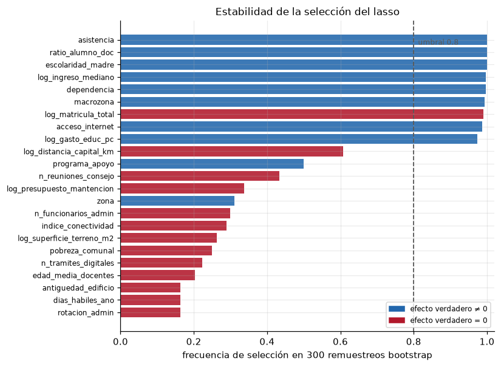
variables estables (frecuencia ≥ 0.8)
['asistencia', 'ratio_alumno_doc', 'escolaridad_madre', 'log_ingreso_mediano', 'dependencia', 'macrozona', 'log_matricula_total', 'acceso_internet', 'log_gasto_educ_pc']
zona intermedia (0.3 ≤ frecuencia < 0.8)
{'log_distancia_capital_km': 0.61, 'programa_apoyo': 0.5, 'n_reuniones_consejo': 0.43, 'log_presupuesto_mantencion': 0.34, 'zona': 0.31, 'n_funcionarios_admin': 0.3}El corte en 0.8 ordena el resultado. Arriba quedan las variables con señal verdadera, y también log_matricula_total, que es estable porque estable es la relación entre tamaño y ruralidad, no porque la matrícula cause aprendizaje. En la franja intermedia aparece log_distancia_capital_km, que el ajuste único había seleccionado y que aquí se revela como lo que es, una variable que entra o sale según el remuestreo. También caen ahí zona y programa_apoyo, las dos verdaderas que la regla de un error estándar había omitido, lo cual confirma que su señal existe pero es débil.
La conclusión práctica es que una lista de variables sin una medida de reproducibilidad no es un resultado, y que el bootstrap cuesta unos segundos.
12. Desempeño fuera de muestra
La selección tiene que pagar su costo en predicción. Se comparan cinco modelos sobre el conjunto de prueba que no se ha tocado, incluyendo un oráculo ajustado solo con las variables verdaderas, que fija el techo alcanzable.
from sklearn.metrics import mean_squared_error, r2_score
def evaluar(pipe, nombre, n_activas):
pred = pipe.predict(X_te)
return {"modelo": nombre,
"variables": n_activas,
"RECM prueba": np.sqrt(mean_squared_error(y_te, pred)),
"R2 prueba": r2_score(y_te, pred)}
vars_oraculo_num = [v for v in VARS_NUM if v in VERDADERAS]
vars_oraculo_cat = [v for v in VARS_CAT if v in VERDADERAS]
prep_or = ColumnTransformer([("num", StandardScaler(), vars_oraculo_num),
("cat", OneHotEncoder(drop="first", sparse_output=False),
vars_oraculo_cat)])
oraculo = Pipeline([("prep", prep_or), ("modelo", LinearRegression())]).fit(X_tr, y_tr)
ols_pipe = hacer_pipeline(LinearRegression()).fit(X_tr, y_tr)
tabla = pd.DataFrame([
evaluar(ols_pipe, "mínimos cuadrados", len(todas)),
evaluar(ridge_min, f"ridge (α={lam_r_min:.0f})", len(todas)),
evaluar(lasso_min, f"lasso α mínimo ({lam_l_min:.3f})", len(activas(lasso_min))),
evaluar(lasso_1se, f"lasso 1 EE ({lam_l_1se:.3f})", len(activas(lasso_1se))),
evaluar(enet, f"elastic net (ρ={m.l1_ratio_:.2f})", len(activas(enet))),
evaluar(oraculo, "oráculo (solo verdaderas)", len(VERDADERAS)),
]).set_index("modelo")
tabla.round(3)| variables | RECM prueba | R2 prueba | |
|---|---|---|---|
| modelo | |||
| mínimos cuadrados | 23 | 24.909 | 0.626 |
| ridge (α=28) | 23 | 24.912 | 0.626 |
| lasso α mínimo (0.403) | 16 | 24.973 | 0.624 |
| lasso 1 EE (1.072) | 10 | 25.286 | 0.615 |
| elastic net (ρ=1.00) | 16 | 24.967 | 0.624 |
| oráculo (solo verdaderas) | 10 | 24.700 | 0.632 |
fig, axes = plt.subplots(1, 2, figsize=(9.6, 3.9))
ax = axes[0]
ax.barh(range(len(tabla)), tabla["RECM prueba"],
color=["0.72", "#4292c6", "#fd8d3c", "#b2182b", "#238b45", "#6a51a3"])
ax.set_yticks(range(len(tabla)), tabla.index, fontsize=8)
ax.invert_yaxis()
ax.set_xlim(tabla["RECM prueba"].min() * 0.97, tabla["RECM prueba"].max() * 1.015)
for k, (recm, nv) in enumerate(zip(tabla["RECM prueba"], tabla["variables"])):
ax.text(recm - 0.03, k, f"{nv} vars.", ha="right", va="center",
fontsize=8, color="white")
ax.set_xlabel("RECM en el conjunto de prueba")
ax.set_title("Error de predicción", fontsize=11)
ax = axes[1]
pred_1se = lasso_1se.predict(X_te)
ax.scatter(y_te, pred_1se, s=12, alpha=0.45, color="#08519c",
edgecolor="none")
lim = [min(y_te.min(), pred_1se.min()) - 5, max(y_te.max(), pred_1se.max()) + 5]
ax.plot(lim, lim, color="#b2182b", lw=1.2)
ax.set_xlim(lim); ax.set_ylim(lim)
ax.set_xlabel("puntaje observado"); ax.set_ylabel("puntaje predicho")
ax.set_title(f"Lasso de 1 EE, $R^2$ = {r2_score(y_te, pred_1se):.3f}", fontsize=11)
fig.tight_layout(); plt.show()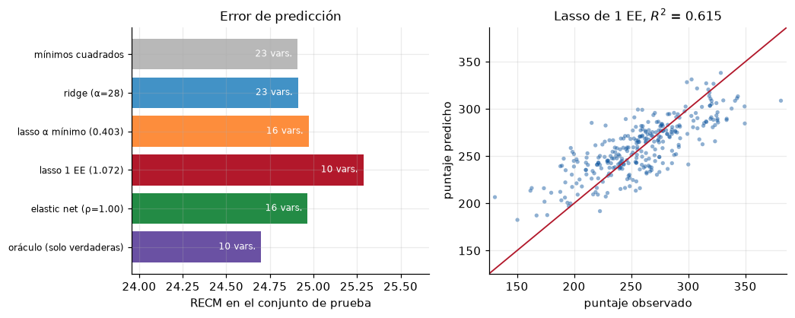
El resultado es el esperado y conviene leerlo con cuidado. Las diferencias de error entre los cinco modelos son pequeñas, de medio punto de puntaje, mientras que la diferencia en número de variables es grande. Un modelo con menos de la mitad de las variables predice prácticamente igual que el modelo completo, y se acerca al oráculo. Ese es el argumento para usar lasso en política pública, no la ganancia predictiva, que es marginal, sino que entrega un modelo comunicable sin perder capacidad de predicción.
13. Lectura para política pública
Tres advertencias que corresponde poner por escrito junto a cualquier tabla de coeficientes regularizados.
Los coeficientes penalizados están sesgados hacia cero por construcción. No se deben leer como magnitudes de efecto. Si se necesita una magnitud, el procedimiento habitual es usar el lasso para seleccionar y luego reajustar por mínimos cuadrados sobre las variables seleccionadas, que es el relaxed lasso, teniendo presente que los errores estándar de ese segundo ajuste ignoran que la selección se hizo con los mismos datos.
Seleccionada no significa causal. El programa de apoyo lo muestra con claridad. Su coeficiente verdadero es positivo, pero en los datos aparece asociado a peor puntaje porque se focalizó en las comunas más pobres.
dif_bruta = (y_tr[X_tr.programa_apoyo == "Si"].mean()
- y_tr[X_tr.programa_apoyo == "No"].mean())
j_prog = nombres.index("programa_apoyo_Si")
print(f"diferencia bruta de medias : {dif_bruta:+6.2f} puntos")
print(f"coeficiente en el lasso de 1 EE : {c_las[j_prog]:+6.2f}")
print(f"coeficiente en mínimos cuadrados : {c_ols[j_prog]:+6.2f}")
sd_prog = (X_tr.programa_apoyo == "Si").to_numpy().astype(float).std()
print(f"efecto verdadero, escala estandar.: {3.5 * sd_prog:+6.2f}")diferencia bruta de medias : -11.57 puntos
coeficiente en el lasso de 1 EE : +0.00
coeficiente en mínimos cuadrados : +1.36
efecto verdadero, escala estandar.: +1.72Al condicionar en las demás variables el signo se corrige, pero eso ocurre aquí porque el simulador puso todos los confusores en la tabla. En datos reales no hay tal garantía, y el lasso no distingue entre un predictor útil y una causa. Para efectos causales el camino son los diseños de identificación, y si se quiere usar regularización dentro de ellos, el double machine learning de Chernozhukov y coautores, que emplea lasso para los términos de molestia y no para el parámetro de interés.
La estandarización condiciona el resultado. Cambiar la escala de una variable cambia su penalización efectiva. Por eso el escalado va dentro del Pipeline y por eso hay que informar qué se estandarizó, incluidas las columnas indicadoras.
14. Resumen operativo
| Decisión | Qué se hizo aquí | Por qué |
|---|---|---|
| Separación de datos | 75/25 antes de mirar nada | evita que la selección vea el conjunto de prueba |
| Codificación | OneHotEncoder(drop="first") |
evita colinealidad exacta con el intercepto |
| Escalado | StandardScaler sobre todas las columnas |
la penalización suma entre predictores |
| Ubicación del preprocesamiento | dentro del Pipeline |
impide fuga de información entre pliegues |
| Validación cruzada | KFold(5, shuffle=True) |
el registro no tiene orden temporal |
| Elección de \(\lambda\) | regla de un error estándar | modelo más pequeño con error equivalente |
| Métrica | ECM, y \(R^2\) para informar | respuesta continua sin colas pesadas |
| Verificación | estabilidad por bootstrap | una lista sin reproducibilidad no es un hallazgo |
15. Ejercicios
- Suba la desviación del error de 24 a 40 en el simulador y repita. ¿Qué variables verdaderas empieza a perder el lasso, y en qué orden?
- Reemplace
KFoldporRepeatedKFold(n_splits=5, n_repeats=5)y compare la anchura de la banda de un error estándar. ¿Cambia el \(\alpha\) elegido? - Implemente el relaxed lasso, esto es, reajuste por mínimos cuadrados sobre las variables que sobrevivieron, y compare el RECM de prueba con el de la tabla de la sección 12.
- Elimine
ingreso_medianodel conjunto de candidatas y vuelva a ajustar. ¿Recupera el lasso la señal socioeconómica a través depobreza_comunal? - Codifique la dependencia administrativa con
drop=Noney ajuste ridge. Compare los coeficientes con los dedrop="first"y explique por qué ridge tolera la colinealidad exacta que mínimos cuadrados no tolera. - Añada 200 columnas de ruido puro para llevar el problema a \(p > N\) y observe qué le ocurre a la frecuencia de selección de la sección 11.